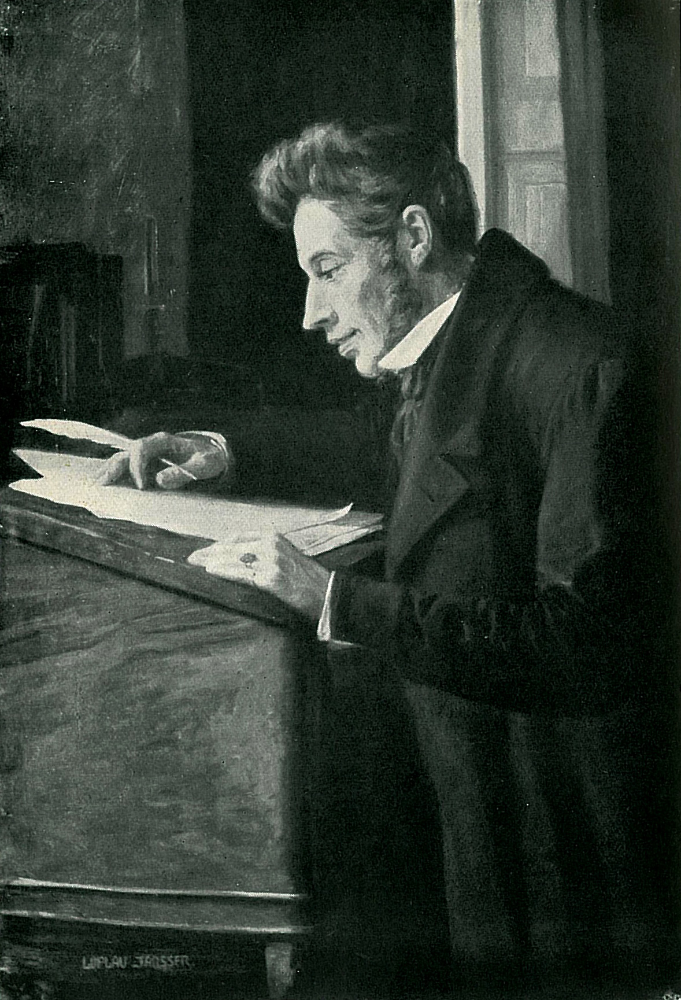
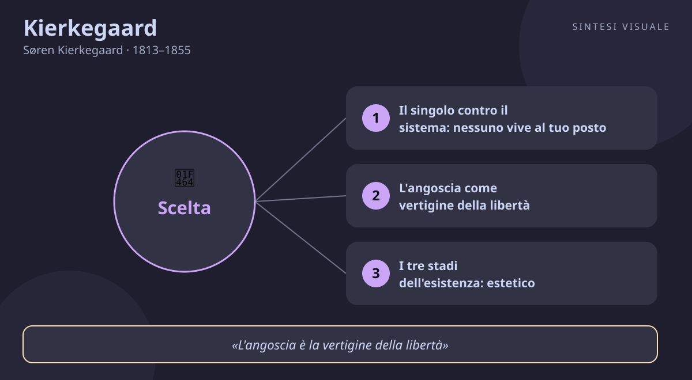

Kierkegaard
Søren Kierkegaard · 1813–1855
«La vita può essere capita solo all'indietro, ma va vissuta in avanti»
- Singolo
- Angoscia
- Salto
- Fede
💬La massima
«La vita può essere capita solo all'indietro, ma va vissuta in avanti.»
— Diari, annotazione JJ:167, 1843 (in danese: «Livet skal forstaas baglaens, men leves forlaens»)
È la frase più famosa di Kierkegaard, e nasce come appunto privato, non come proclama. Il senso è semplice e vertiginoso insieme: solo guardando indietro i pezzi della nostra vita sembrano incastrarsi con una logica — quella relazione finita, quel lavoro rifiutato, quella città lasciata. Ma quella logica è un'illusione retrospettiva. Mentre vivi, in avanti, nessuna necessità ti guida: ci sono solo possibilità aperte e la pressione di decidere senza poter sapere come andrà. I filosofi del suo tempo — gli hegeliani — pretendevano di spiegare tutto a posteriori, come se la storia fosse un teorema già risolto. Kierkegaard ribalta il tavolo: capire serve, ma non ti esonera dal salto. Ogni scelta vera — sposarsi o no, credere o no, cambiare strada o no — si fa nel buio del presente, e solo dopo racconterai a te stesso «doveva andare così». La massima è dunque un invito all'onestà: smetti di aspettare la chiarezza totale prima di agire, perché la chiarezza arriva sempre troppo tardi, quando hai già vissuto.
👤Biografia
Søren Aabye Kierkegaard nasce a Copenaghen il 5 maggio 1813, settimo figlio di un ricco commerciante di lana tormentato da un cupo senso di colpa religioso. È un ragazzo gracile, ironico, brillantissimo: a teatro fischia e applaude da solo, all'università discute di tutto con tutti. Il padre muore nel 1838 lasciandogli un'eredità che gli permette di non lavorare mai e di dedicarsi solo a scrivere — e lui scrive come un forsennato: in poco più di dieci anni pubblica una valanga di libri, quasi sempre sotto pseudonimo. Nel 1841 rompe il fidanzamento con Regine Olsen, la donna che amava: un gesto che lo marchia per sempre e che riversa in ogni pagina sul tema della scelta e del sacrificio. Litiga con la Chiesa di Stato danese, con i giornalisti satirici che lo prendono in giro per le gambe storte e i pantaloni troppo corti, con mezza Copenaghen che pure lo vede passeggiare e conversare ogni giorno al caffè. Muore il 11 novembre 1855, a soli 42 anni, dopo un collasso in strada, povero e quasi solo, nel pieno della sua battaglia contro la cristianità ufficiale. Testardo, malinconico, spiritosissimo: un guastafeste geniale che pagò di persona ogni idea.
📌Sintesi del pensiero
Kierkegaard è il padre dell'esistenzialismo: contro i grandi sistemi che spiegano l'umanità in astratto, rimette al centro il singolo individuo concreto, con la sua angoscia, le sue scelte e la sua responsabilità. Verità non è ciò che si dimostra in teoria, ma ciò che si vive e si decide in prima persona: esistere viene prima di capire. Il cuore della sua filosofia è la scelta — libera, rischiosa, senza garanzie — attraverso tre stadi dell'esistenza (estetico, etico, religioso) e due esperienze fondamentali, angoscia e disperazione, che rivelano all'uomo chi è davvero.
🏛️I temi fondamentali
-
- Il singolo contro il sistema: nessuno vive al tuo posto. L'epoca di Kierkegaard adorava Hegel: tutto spiegato, tutto necessario, tutto razionale. Lui risponde che un sistema può spiegare l'umanità ma non può vivere al tuo posto. Nessuna teoria ti sposa, ti fa cambiare lavoro o ti salva la coscienza: a decidere sei tu, solo, con nome e cognome. È il tema che apre la strada a tutto l'esistenzialismo del Novecento.
- L'angoscia come vertigine della libertà. L'angoscia non è paura di qualcosa di preciso: è il giramento di testa che provi davanti a ciò che potresti fare. Come stare sul bordo di un precipizio e scoprire che a spaventarti non è cadere, ma la possibilità stessa di buttarti. Ogni scelta importante — dimetterti, dire un sì per sempre — porta con sé questa vertigine: la prova che sei libero, e che la libertà pesa.
- I tre stadi dell'esistenza: estetico, etico, religioso. L'uomo può vivere da esteta (Don Giovanni: cerca il piacere immediato e si annoia di tutto), da uomo etico (il marito, il giudice: sceglie il dovere, la fedeltà, le regole) o da uomo religioso (Abramo: obbedisce a Dio anche contro ogni ragione, come nel sacrificio di Isacco). Non sono tappe automatiche: il passaggio richiede un salto, non una dimostrazione.
- La disperazione e il sé diviso. Ne La malattia mortale la disperazione è «la malattia per la quale si muore senza morire»: il tormento di non essere sé stessi, o di voler essere a tutti i costi un altro. Il chirurgo di successo che odia la sua vita, la persona che recita un personaggio sui social e la sera non si riconosce allo specchio: ecco la disperazione kierkegaardiana, malattia dell'io diviso.
- La fede come paradosso e scandalo. Credere, per Kierkegaard, non è aderire a un catechismo: è il paradosso di Abramo che sale sul monte con il coltello, fidandosi contro ogni evidenza. La fede offende la ragione — ed è proprio questo il suo valore: se fosse dimostrabile, non sarebbe fede ma matematica. Da qui la sua guerra contro una Chiesa ridotta a ufficio comodo e a battesimi di routine.
📚Le opere principali
-
- Aut-Aut (1843). Il suo esordio romanzesco e spiazzante: un carteggio tra un esteta godereccio e un giudice moralista, senza che l'autore dica chi ha ragione. Tesi centrale: la vita è scelta tra modi inconciliabili di esistere, e nessuno può sceglierli al tuo posto. Conta perché inventa un nuovo modo di fare filosofia: per personaggi, diari e lettere, non per trattati.
- Timore e tremore (1843). Meditazione sul sacrificio di Isacco firmata con lo pseudonimo Johannes de Silentio. Tesi: la fede di Abramo è assurda per la morale comune e proprio per questo è fede. Conta perché è il testo più intenso sul rapporto tra etica e religione: pagine che ancora oggi tolgono il sonno.
- Il concetto dell'angoscia (1844). Studio sul peccato originale letto come emblema della condizione umana. Tesi: l'angoscia è la condizione di possibilità della libertà, la «vertigine» davanti al possibile. Conta perché fonda mezza psicologia e psichiatria esistenziale del Novecento.
- La malattia mortale (1849). Analisi della disperazione come malattia del sé davanti a Dio. Tesi: disperarsi significa non riuscire a essere sé stessi. Conta perché è il suo capolavoro sistematico, quello che più ha nutrito teologi, psicologi e scrittori.
💬Massime celebri
-
«L'angoscia è la vertigine della libertà» — Il concetto dell'angoscia, 1844. Conta perché in sei parole condensa tutta la sua antropologia: essere liberi non è leggero, fa girare la testa.
«La soggettività è la verità» — Postilla conclusiva non scientifica alle «Briciole filosofiche», 1846. Conta perché rovescia secoli di filosofia: la verità che conta non è quella oggettiva dei manuali, ma quella per cui si è disposti a vivere e morire.
«Osare è perdere momentaneamente l'equilibrio; non osare è perdersi» — pensiero dei Diari, in linea con la filosofia della scelta degli scritti 1843-1849. Conta perché è il distillato pratico di Kierkegaard: il rischio del salto è il prezzo per non svanire.
⌛Contesto storico
Kierkegaard nasce nel 1813, l'anno della bancarotta dello Stato danese dopo le guerre napoleoniche: la piccola Danimarca, un tempo potenza del Nord, è ridotta a Stato in miniatura con capitale Copenaghen, dove il filosofo vivrà sempre, passeggiando ogni giorno tra caffè, teatri e chiese. È l'età dell'oro danese: fioriscono arte, letteratura e scienza, ma la politica resta una monarchia assoluta che solo nel 1849, con la prima Costituzione, diventerà parlamentare; sullo sfondo, la tensione con i ducati dello Schleswig-Holstein e il nazionalismo tedesco.
La società è ordinata e luterana: la Chiesa evangelica è Chiesa di Stato, i pastori sono funzionari, il battesimo è un atto amministrativo. Proprio contro questa religione tiepida e borghese Kierkegaard scatenerà la sua ultima battaglia con gli opuscoli de Il Momento (1855).
I movimenti che lo formano sono il romanticismo tedesco e danese (l'ironia, il culto del genio e del sentimento), Socrate — suo modello di pensatore che interroga per strada senza scrivere sistemi — e soprattutto l'hegelismo trionfante all'università, che egli studia a fondo per poi demolirlo: da Hegel prende il metodo dialettico e la serietà storica, ma ne rovescia l'esito. Da parte sua, Kierkegaard trasmette all'Europa due grandi correnti: l'esistenzialismo filosofico e letterario del Novecento e la teologia dialettica che rimetterà Dio al centro contro le chiese borghesi.
🌊L'eredità
Senza Kierkegaard il Novecento penserebbe diversamente. Heidegger riprende da lui angoscia, decisione e «essere-per-la-morte»; Jaspers e poi Sartre trasformano il singolo kierkegaardiano nell'uomo «condannato a essere libero», mentre Camus discute con l'Abramo di Timore e tremore nelle pagine sul suicidio e sull'assurdo. Gabriel Marcel ne fa il patrono dell'esistenzialismo cristiano. In teologia, Karl Barth e Bultmann imparano da lui a separare la fede viva dalla religione abitudinaria, e Paul Tillich porta Kierkegaard nell'America del dopoguerra. La psicologia umanistica — da Frankl a Rogers fino a Yalom — lavora ogni giorno con la sua angoscia e la sua disperazione, anche quando non lo cita. E in letteratura Kafka annota i suoi diari, Ibsen costruisce personaggi come Brand sul suo modello, e intere generazioni di scrittori imparano che si può filosofare raccontando una storia d'amore finita male.
🌍Esempi di oggi
-
- Il colloquio che non arriva mai. Rimandi da mesi la candidatura a quel lavoro che desideri davvero, aspettando «il momento giusto» e accumulando altri corsi, altri consigli, altre certezze. Kierkegaard sorride amaro: la chiarezza totale non arriverà mai, perché la vita si vive in avanti. Il salto si fa nell'incertezza, o non si fa.
- Il senno di poi sui social. Scorri le foto di cinque anni fa e tutto sembra ovvio: era chiaro che quella storia sarebbe finita così, che quella città non faceva per te. È la comprensione all'indietro, che costruisce necessità a posteriori. Ma allora, nel presente, brancolavi nel buio come tutti: ricordarlo ti rende più umile nei giudizi sugli altri e più coraggioso nelle tue scelte.
- La Regine di oggi. Stai per dire un sì definitivo — matrimonio, trasferimento all'estero, un figlio — e scopri l'angoscia: non la paura di sbagliare i calcoli, ma la vertigine di essere libero di farlo davvero. Come Kierkegaard con Regine Olsen nel 1841, capisci che nessuna lista di pro e contro deciderà al tuo posto: alla fine salti, e il salto sei tu.
📄
# Søren Kierkegaard — «La vita può essere capita solo all'indietro, ma va vissuta in avanti»
Buongiorno! Oggi incontriamo il pensatore che ha inventato l'esistenzialismo un secolo prima che andasse di moda: il danese che scelse l'angoscia della libertà contro le comode certezze del sistema. Il ritratto qui sopra — il celebre disegno incompiuto attribuito al cugino, Copenaghen 1838 circa — lo mostra giovane, con quello sguardo assorto di chi sta già pensando troppo.
🧠Quiz
Metti alla prova quello che hai letto — rispondi in chat con es. 1B 2A 3C 4D 5A (usa «-» per le risposte che salti):
1 Da quale opera è tratta la massima di oggi?
2 Che cosa significa «la vita va vissuta in avanti»?
3 Qual è la sequenza corretta dei tre stadi dell'esistenza?
4 Per Kierkegaard l'angoscia è «la vertigine della libertà» perché:
5 Perché Kierkegaard ruppe nel 1841 il fidanzamento con Regine Olsen, secondo la lettura che ne dà lui stesso?
✅Soluzioni — tocca per vedere
1B – 2B – 3C – 4B – 5C
🔁Ripasso
- Massima e Diari 1843: se hai sbagliato la 1, ricorda che la frase non viene da un trattato ma da un appunto privato (JJ:167): guardiamo indietro per capire, ma decidiamo sempre al buio del presente.
- Stadi estetico-etico-religioso: se hai sbagliato la 3, ricorda che non sono età della vita ma modi di esistere (piacere, dovere, fede); si passa dall'uno all'altro solo con un salto, mai per deduzione.
- Angoscia e libertà: se hai sbagliato la 4, ricorda il precipizio: la paura ha un oggetto preciso, l'angoscia ha per oggetto la tua stessa possibilità di scegliere.
🖼️In un colpo d’occhio

Tocca l’immagine per ingrandirla.